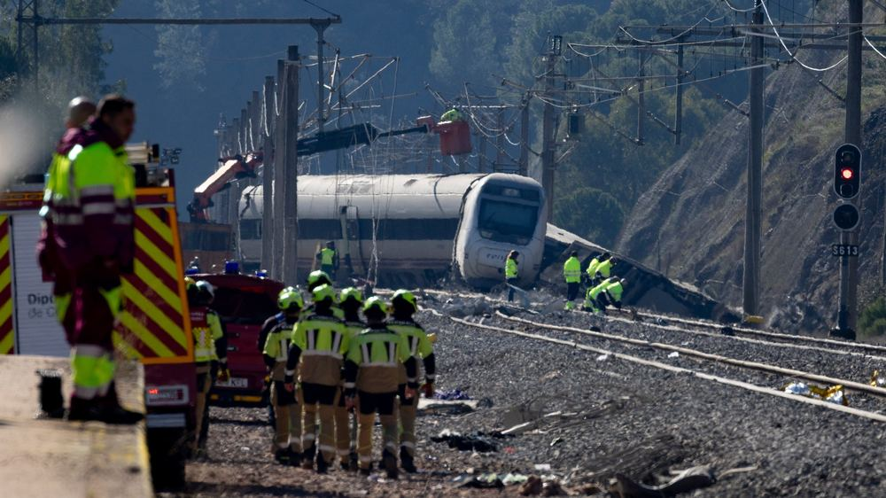

Un extrabajador de la cantera del balasto de Adamuz da pistas a la jueza sobre material “defectuoso” en el punto del siniestro

La instrucción esperará al informe de los peritos judiciales y se lleva a una pieza separada el testimonio que habla de la tendencia de las piedras a fragmentarse bajo la carga de los trenes
La jueza Cristina Pastor, titular del Tribunal de Instancia de Montoro (Córdoba) en que se instruye el caso del accidente ferroviario de Adamuz (Córdoba) del pasado 18 de enero, maneja la declaración de un trabajador familiarizado con las obras de remodelación de la línea de alta velocidad Madrid-Sevilla en la que se apunta a la existencia de material “defectuoso” en las vías en el punto del siniestro. El choque de un Alvia de Renfe con un Iryo descarrilado supuestamente por una rotura en la vía dejó dejó 46 víctimas mortales . El problema estaría, según el declarante, en la integridad del balasto, material compuesto por piedra triturada esencial como base de las vías y para absorber las…